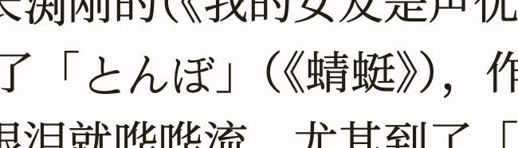

全角引号，终于好了
1 全角引号
在 Unicode 里，问号、叹号、各种括号都有全角半角两种版本1，各自有独立的编码；但因为莫名的原因，最常用的引号却不在此列。中英混排的时候想要正确显示直角和半角的引号就很头疼；搞不好的话，中文里显示半角引号还不算太违和，英文里蹦出来一个全角引号就太丑了。
CSS 没法自动区别什么时候用全角引号、什么时候用半角，只能靠标记。好在还没复杂到需要手工标记的地步，只要用程序检查引号前后的字是中文还是英文，以此标记全角还是半角，就基本不会出错。我现在的办法是这样，默认字体还是英文先中文后：
body { font-family: Charter, Source Han Serif CN, serif; }
需要全角的引号用<span>标签包起来：
<span class="full-width-quote">“</span>
全角引号用 CSS 指定中文字体：
span.full-width-quote { font-family: Srouce Han Serif CN, serif; }
至于怎么标记全角引号，我改了博客的导出器：
(defun org-blog-paragraph (paragraph contents info) "Add span tags to full-width quotes." (let ((contents (with-temp-buffer (insert contents) (goto-char (point-min)) (while (re-search-forward "[‘’“”]" nil t) (if (or (memq (aref char-script-table (char-after)) '(han cjk-misc)) (memq (aref char-script-table (char-before (1- (point)))) '(han cjk-misc))) (replace-match (concat "<span class=\"full-width-quote\">" (match-string 0) "</span>")))) (buffer-string)))) (org-html-paragraph paragraph contents info)))
Emacs 对各种 Unicode 属性的支持很好，可以方便地判断一个字的 script、category 之类的属性。这里通过检查字的 script 属性是不是 han 或者 cjk-misc 来判断这个字是不是中文。
顺带一提，用这种方法还可以用来在 Emacs 里实时渲染全角和半角引号2。
2 标点挤压
全角引号搞好了，又开始贪心标点挤压3。没有标点挤压的时候，几个标点排在一起确实不大好看：
Figure 1: 出自余日摇滚第48期
挤压以后就不那么空了：

Figure 2: 挤压完的样子
原理是设置 CSS 属性 font-feature-settings: "halt"4，启用 OpenType 的 halt 特性5。所以像全角引号一样，用程序识别两个连在一起的全角标点，用 <span> 标签包起来就行了。要注意的是，你用的字体要有 halt 这个特性才行，我用的思源宋体是有的6。
这是修改后添加了标点挤压功能的代码：
(defvar org-blog--jiya-marks "，。、：；？！“”《》（）『』「」〖〗【】" "These punctuation marks should be squeezed when appears in sequence.") (defun org-blog--should-be-full-width (pos) "Return t if the quote at PPS should be a full-width one." (or (memq (aref char-script-table (char-after pos)) '(han cjk-misc)) (memq (aref char-script-table (char-before (1- pos))) '(han cjk-misc)))) (defun org-blog-paragraph (paragraph contents info) "Add span tags to full-width quotes." (let ((contents (with-temp-buffer (insert contents) (goto-char (point-min)) (while (re-search-forward (rx-to-string `(any ,org-blog--jiya-marks)) nil t) ;; This char is cjk punctuation mark, if the next one is ;; also a cjk punctuation mark, squeeze them. (cond ((looking-at (rx-to-string `(any ,org-blog--jiya-marks))) (forward-char 1) (let ((text (buffer-substring (- (point) 2) (point)))) (backward-delete-char 2) (insert (concat "<span class=\"jiya full-width-quote\">" text "</span>")))) ;; If the next char is not a cjk punctuation mark, but ;; this char is a quote that should be full-width, we ;; also need to mark it. ((and (looking-back (rx (any "“”")) 1) (org-blog--should-be-full-width (point))) (replace-match (concat "<span class=\"full-width-quote\">" (match-string 0) "</span>"))))) (buffer-string)))) (org-html-paragraph paragraph contents info)))
大概的逻辑是如果遇到了全角标点，就看看后面有没有跟着另一个，有的话把这两个合在一起挤压。如果有三个以上连续的标点，我还能用零距空格（ZERO WIDTH SPACE）控制挤哪个不挤哪个：在不想挤的两个标点之间插一个空格就行了。（我偷懒把标点挤压和全角引号放在一起处理了，不然有点麻烦。）
3 日文显示
日文显示也有点小问题，因为日文汉字的写法和中文不一样，想要正确显示要用日文字体。因为站上日文不多，我就用了最简单粗暴的方法：手动标记所有日文，也不算太麻烦。理论上思源宋体包含简体、繁体、日文、韩文的所有汉字变体，用一个字体加上 lang 标签就能让浏览器自动选择变体，但是因为各种原因我没这么搞，而是直接给日文用日文字体，像这样：
.jpns, .JPNS { font-family: Source Han Serif JP; }
怎么标记日文呢？Org 有宏的功能，把行内日文用宏包起来就行了：
勇次 → {{{jpns(勇次)}}}
原文7是
，尤其到了「{{{jpns(勇次)}}}」。
一整块日文也可以用类似的方法标记，我就不再赘述。